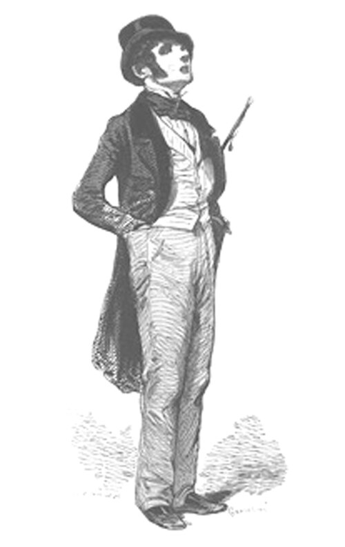

Andrew's Blog
Andrew's Blog


My dear friend, Peter, recently completed a journey to visit the capitol (intentionally spelled that way) of every state in the U.S. He documented his inspirational journey in videos on YouTube.
Although this adventure was focused on traveling and meeting new people, a common theme in the videos was about building community at home. A term Peter shared with me is "Flâneur". Flâneur is a hard word to describe. If you look in an English dictionary it might define it along the lines of "an idle man-about-town". But this does not do it justice, a flâneur is more lyrical and poetic than that.
Popularized in 19th century France, a flâneur is an integral part of modern urban life. A story teller of sorts. Someone who observes and is aware of everything going on in the community. The idle stroller definition loses this touch. Flâneur is not just an observer apart from society, they are a part of the urban community.
Why am I writing all this? Well, I think it would be great to be a flâneur. And Peter thinks so too. So much so that he is starting a club. Each month members are given a prompt to explore their local community and find interesting things to share with the group. I am going to participate and document my findings here in my blog. I hope you join me for what is about to come!

Subscribe to the RSS Feed to see more flâneur content!